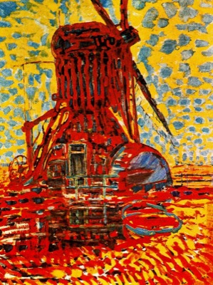

Piet Mondrian in Rome
All I had known of Piet Mondrian before last Thursday was the short bit I read of him in E.H. Gombrich’s The Story of Art. I knew that he was famous for his abstracts that cut the elements of painting down to horizontals, verticals, primary and non-colors. So I was pleased and surprised to discover the width and breadth of his paintings at the exhibition in the Vittoriano in Rome called, Mondrian: Perfect Harmony.
And as I walked the relatively empty halls (in comparison with last year’s exhibition on Van Gogh) I became keenly aware of his development that took a lifetime, the integral process by which Mondrian created his most famous works. Mondrian’s paintings can be divided into four chronological groups that differ incredibly one from another. Sketches were also on exhibit and remained the tying factor between these stages, as was his concentration on trees—some of my favorite pieces.
In Mondrian’s early days he painted in the tradition of the Hague School, in the Netherlands. These paintings are characterized by greyness and are landscapes or scenes from daily life.
Farmhouse in a Meadow Landscape near Duivendrecht, 1905. Image from here.
Mondrian seems to take a leap into the sun in his second phase: these paintings are bright, colorful and often influenced by his new found Theosophy.

Mill in Sunlight, 1908. Image from here.
Next came cubism, highly influenced by Picasso and Braque, Mondrian moved to Paris and began removing recognizable objects from his works.
Tableau No. 2/Composition No. VII, 1913. Image credit.
Then finally, he arrived at the paintings we know, that are more famous than the painter himself. I was surprised at what felt like a variety within the abstract that doesn’t change in subject matter. Because abstract paintings have become synonymous with modern, I guess I thought that canvases would be posters. Instead they are tangible, cracking works, much smaller than I imagined.
Composition with Blue and Yellow, 1932. Image from here.
If you are in Rome sometime between now and 19 January, I recommend it.
· · · · · · · · · · · · · · · · · · · ·